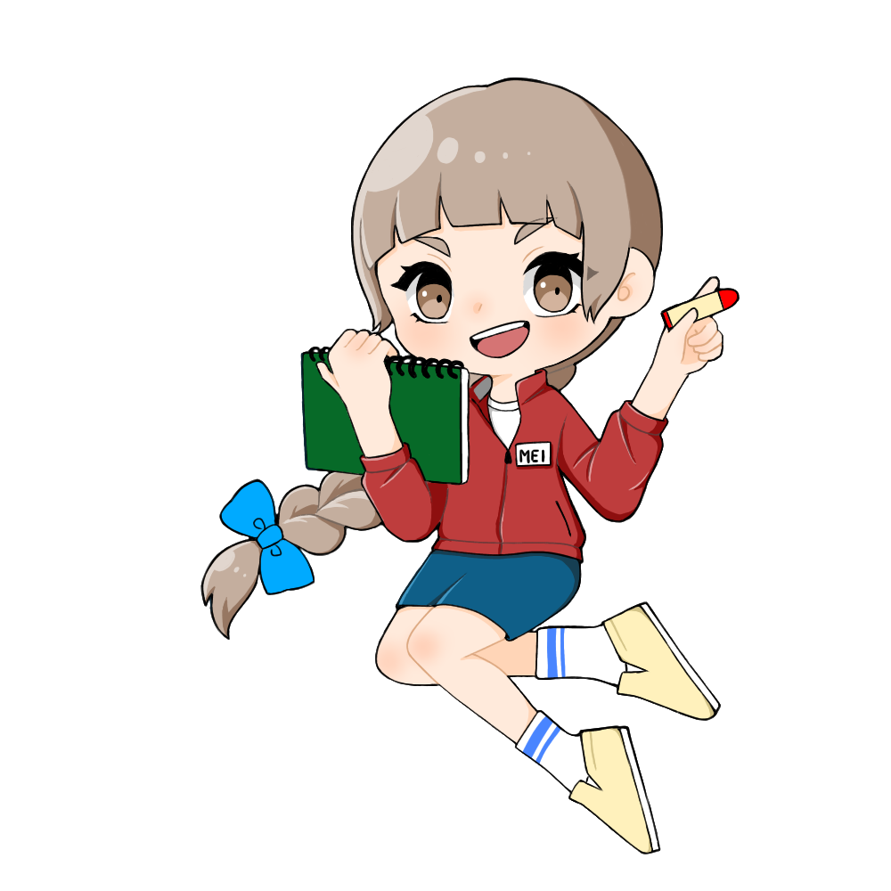
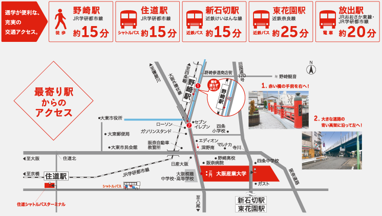

よくあるご質問

Q.車で来てもいいですか
大学の南側に駐車場をご用意しております。
また、駐車場は限られていいるため、可能であれば公共交通機関でのご参加にご協力をお願いいたします。
また、駐車場は限られていいるため、可能であれば公共交通機関でのご参加にご協力をお願いいたします。
Q.なにで来たらいいですか
徒歩、自転車、バイク、自動車、公共交通機関などなにで来ていただいても構いません。
しかし、駐車場、駐輪場共に限りがありますのでご了承ください。
公共交通機関をご利用の方は、以下の画像を参考にしてお越しください。
しかし、駐車場、駐輪場共に限りがありますのでご了承ください。
公共交通機関をご利用の方は、以下の画像を参考にしてお越しください。

Q.何時から受付開始ですか？
13:30から受付を開始いたします。13:50までの受付にご協力ください
また、万が一遅れてしまった場合は参加はできますが、全てのものづくりを体験できない可能性がありますのでご了承ください。
Q.料金は無料ですか
無料でご参加いただけます
Q.小学生未満の子を連れて行ってもいいですか
連れてきていただいて大丈夫です。
しかし、見学のみのご参加になりますのでご了承ください。
連れてこられる際は周りの方にご迷惑をかけないよう、ご協力をお願いいたします。
Q.当日参加は可能ですか
不可能です。ものづくり教室は、事前に予約されて当選された方のみご参加いただけます。
Q.当選連絡はいつ届きますか
まだ未定です
Q.当日持参するものはありますか
当選確認のため、当選連絡のハガキ又はメールをご用意ください。
Q.当選ハガキ、メールを無くしてしまった場合はどうすればいいですか
受付で、当選確認をいたしますので身分を確認できるものをご提示ください。
Q.応募した人がいけなくなった場合、代わりの人は参加できますか
可能ですが、親族の方に限ります。
当日、受付にて当選された人と代わりの人の名前をお伝えください。
Q.途中で帰宅することは可能ですか
可能です
ご帰宅の際はスタッフにお声掛けください
Q.写真、動画をとってもいいですか
他の参加者のご迷惑にならない程度であれば可能です。
Q.写真を撮られたくないです
カメラマンに一声かけていただけましたら撮影いたしませんのでご安心ください。